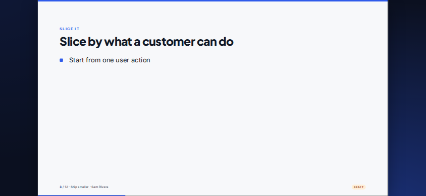

Slide translations: each guest reads the slides in their own language
A deck can carry translations of its slides. It is off by default, and an agent turns it on over MCP. A guest on the phone picks a language and sees the slides in it, while the big screen, the presenter window and the phone remote stay in the deck's primary language. Turning the phone sideways shows the slide full screen. The phone and slide styles come from the SW-5 and SW-9 mockups and the app's tokens.css.
What SW-883 ships
off by default, per deckships In this Feature
- A translations setting on each deck. It is off by default.
set_translationsturns it on and sets the primary language (English by default) and the other languages. - Translated text for each element. Every text slot is the primary text, and each other language can have its own version. A missing line shows in the primary language.
- A language picker on the guest phone. It is a chip in the header that opens a sheet. The choice changes only that phone.
- Translated polls. The question and options are translated. Answers are counted by option, so every language adds to the same bars.
- Landscape, finished. The full-screen slide that SW-5 built, plus the language, a tap overlay, a one-time hint and a "Full screen" button on Android (D6).
- The visual check in every language.
check_deckand the fit check run on each language's text in that language's font.
stays as it is Not translated
- The big screen, the presenter window, the phone remote and the speaker notes all stay in the primary language.
- What guests type, meaning questions and word-cloud or open-text answers, is shown as typed.
- The guest app's own buttons and labels (tabs, the waiting card, the privacy sheet). That is a separate Feature (D4).
- Right-to-left languages such as Arabic and Hebrew: a later Feature (D9).
- SlideWorks doesn't translate anything itself: the agent writes the translations (D8).
GuestFollowing.tsx): on a phone turned sideways, the slide fills the height of the screen and everything else is hidden. Section 04 shows the CI baseline and what this Feature adds to it.Live demo: one talk, read in four languages
step the deck, switch the phone's language, turn it sidewaysThe laptop is the presenter window, in English. The phone is a guest. Tap its language chip to switch, or use the buttons under the laptop. Slide 5 has one line nobody has translated into 日本語 yet, so it shows in English with a dashed outline here (the outline is for this review, not the app). Slide 4 is a poll: every language's answers count on the same bars.
- The presenter window never changes language. The purple "Reading in" counter is D7.
- In landscape, tap the slide to show the overlay with the slide number and the language chip for 3 seconds.
Every phone state
These are the new states only. The lobby, reconnecting, ended, offline and privacy screens are SW-5's and don't change, except that a deck with translations shows the language chip in the header.
Landscape: what is built, and what SW-883 adds
Today the phone takes the slide full screen as soon as it is sideways and under 500 px tall. D6 settled the additions: the overlay, the hint and Full screen on Android.
as built SW-5: guest-following-landscape baseline

- The slide is sized to the height, with black bars at the sides. The header, progress, activity card, reactions, tabs and footer are hidden.
- There is no way to see the slide number, the connection state or the language without turning the phone back.
- On iPhone the browser's own bars can still show, because iOS Safari has no full-screen mode for a page element.
decided The same, plus a tap overlay, the language and Full screen on Android
- A tap shows an overlay for 3 seconds, with the slide number, the Live or Offline chip, the language chip and the progress line. A second tap hides it.
- The language applies here too, and the chip opens the list as a side panel.
- A one-time hint in portrait, "Turn sideways to read the slide full screen", which goes away once someone has turned the phone or closed the hint.
- A "Full screen" button on Android, in the overlay, which hides the browser's bars. iPhone Safari can't do this, so the button doesn't show there (D6).
- Not in SW-883: pinch to zoom.
Deck page: the Translations card
new card beside "Q&A and reactions"The owner can see what an agent has done: which languages there are, how much of each is translated, and what went out of date when the English changed. The switch is here as well as over MCP (D5).
Q&A and reactions
Questions open, reactions on.
Translations
Off. Guests see the slides in English only.
Turn it on here, or ask your agent to add translations. It will call set_translations.
Translations
Primary is what the big screen, the presenter and the notes use, and what every other language falls back to.
| ไทยThai | 24 of 24 | complete | |
| 日本語Japanese | 23 of 24 | 1 missing · slide 5 | |
| EspañolSpanish | 23 of 24 | 1 out of date · slide 3 |
How translations are stored
decided: A (D1)A slide is a layout plus typed slots (SW-1 D3), and the renderer, the fit check, lint, the PDF export and the share card all read plain strings from those slots. The choice is where the other languages go.
A · Translations beside the slots, keyed by slot path decided
{ "layout": "cards",
"slots": {
"headline": "Three things get better",
"cards": [{ "title": "Faster…" }] },
"translations": {
"th": {
"/headline": { "text": "สามสิ่งที่ดีขึ้น",
"from": "Three things…" },
"/cards/0/title": { … } } } }
from records the English it was translated from. When the English changes, the line is out of date instead of silently wrong.B · Every string becomes a language map as first described
{ "layout": "cards",
"slots": {
"headline": {
"en": "Three things get better",
"th": "สามสิ่งที่ดีขึ้น",
"ja": "3つのことが良くなる" },
"cards": [{ "title": { "en": …, "th": … } }] } }
string | map, and so do all 30-odd layout components, the fit fixtures, lint, the PDF export and custom layouts (SW-50).C · A deck dictionary keyed by the English text
{ "translations": {
"Faster reviews": {
"th": "รีวิวเร็วขึ้น",
"ja": "レビューが速くなる" },
"Three things get better": { … } } }
Agents add translations over MCP
The agent does the translating itself. SlideWorks stores the text, checks that it fits, and tracks what has gone out of date. This is a sample session with option A.
// turn it on: off by default, like Q&A's settings in update_qa set_translations({ deck: "7Kq2", enabled: true, primary: "en", languages: ["th", "ja", "es"] }) ← Translations on. Primary English. ไทย 0 of 24, 日本語 0 of 24, Español 0 of 24. // read what needs translating get_deck({ deck: "7Kq2", language: "th" }) ← slide 3 · revision 12 · 8 lines /kicker "Why it matters" missing /headline "Three things get better" missing /cards/0/title "Faster reviews" missing … // many slides in one call (SW-568: fewer round trips) translate_slides({ deck: "7Kq2", language: "th", slides: [ { slide: 3, revision: 12, lines: { "/kicker": "ทำไมจึงสำคัญ", "/headline": "สามสิ่งที่ดีขึ้น", … } }, … ] }) ← ไทย 24 of 24. translate_slides({ deck: "7Kq2", language: "es", slides: [ { slide: 5, revision: 9, lines: { "/cards/1": "Oculta el trabajo que aún no está terminado detrás de un feature flag en producción" } } ] }) ← refused: slide 5 /cards/1 runs past its card in Español (needs 412 px, has 360 px in Noto Sans). Shorten it. // the English changes afterwards update_slide({ deck: "7Kq2", slide: 3, revision: 12, slots: { … } }) ← warning: /cards/1/body changed. Its ไทย, 日本語 and Español lines are out of date and show in English until they are translated again. translate_slides({ language: "th", … }) · translate_slides({ language: "ja", … }) ← ไทย 24 of 24. 日本語 23 of 24 (slide 5 /cards/2 missing). Español is left at 23 of 24 with 1 out of date: the deck page in 05.
How each phone gets its language
A guest is sent only the slide that is on screen (SW-5 D3), so translations travel the same way. The phone tells DeckHub its language, and the hub sends each language group the current slide with that language already merged in. The phone's renderer doesn't change.
- Fonts. Plus Jakarta Sans and Inter have no Thai or Japanese glyphs. Each language gets a Noto fallback in the font stack, and the fit check measures with that font (SW-50 D8 already measures font widths).
- Load. A move costs one message per language in use instead of one in total. SW-6's 1,000-guest load run gets a mixed-language variant.
- Polls. An answer is the option's index, so answers in every language count on the same bars. The big screen shows the primary labels.